The source videos (public CDN MP4s)
These load on varicent.com/interactive-product-tours before any gate; the form just plays them. Direct links:
no-codeAI 1. Incentives tour — plan design → calculation → test → explain
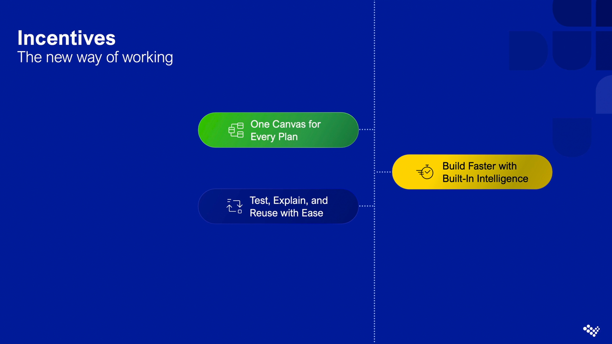
0:30 — tour opening: "One Canvas for Every Plan · Test, Explain, and Reuse with Ease · Build Faster with Built-In Intelligence"Step 1 — Requirements workflow (the plan "spec" before build)
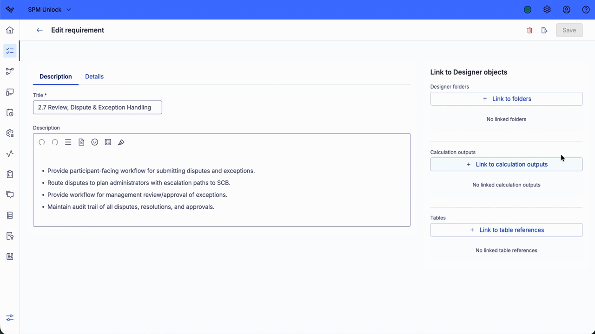
1:10 — Edit requirement → Description: title "2.7 Review, Dispute & Exception Handling", plus rich-text bullets defining dispute routing, escalation, audit trail. Right rail: Link to Designer objects (folders / calculation outputs / tables) — requirements tie to what gets built.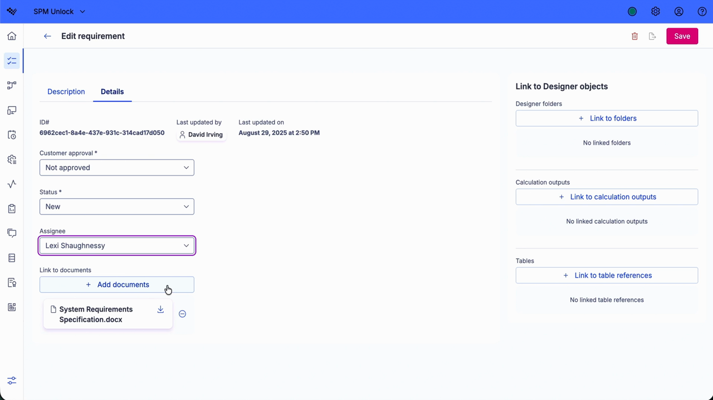
1:40 — Details tab: ID, last-updated by/on, Customer approval, Status, Assignee, linked documents (System Requirements Specification.docx).Step 2 — Designer: where plans are built
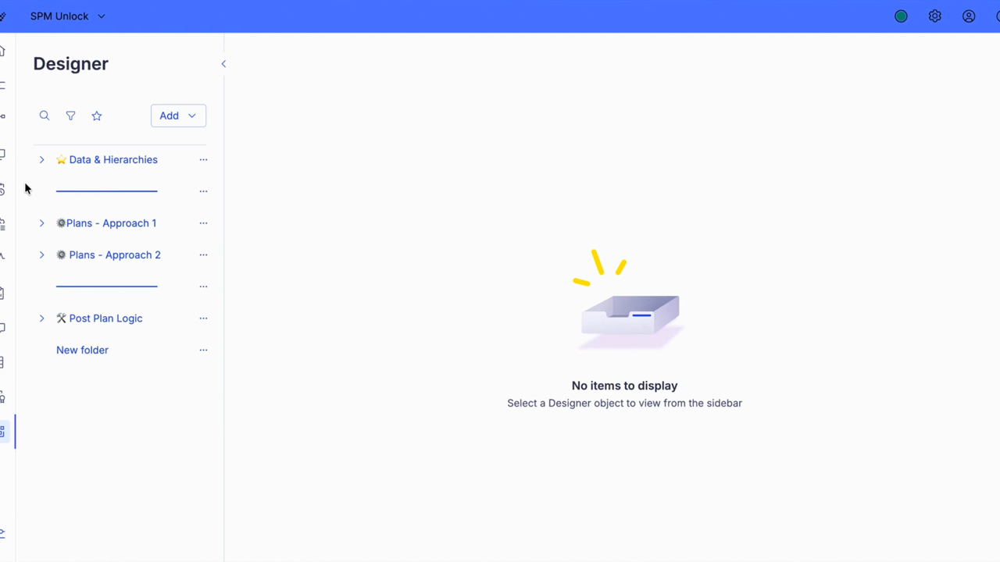
2:10 — Designer sidebar: Data & Hierarchies, Plans - Approach 1, Plans - Approach 2, Post Plan Logic. Every plan artifact lives in these folders.Step 3 — Calculation canvas (the plan logic, no formulas typed)
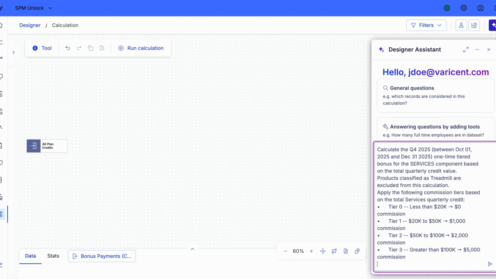
2:40 — Designer → Calculation. Left: canvas with tool node "AE Plan Credits" + Run calculation. Right: Designer Assistant — admin describes the rule in plain English ("Calculate the Q4 2025 one-time tiered bonus for SERVICES based on quarterly credit, exclude Treadmill; Tier 0 <$20K → $0 ... Tier 3 >$100K → $5,000"). Assistant builds the tool chain.This is the no-code calc builder. The assistant turns the prompt into configurable tools on the canvas — each one has a form you can inspect/edit, not hidden logic.
Step 4 — Filter tool config
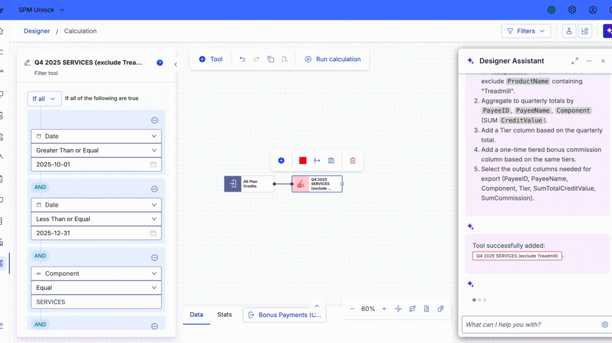
3:10 — Q4 2025 SERVICES (exclude Treadmill) · Filter tool: visual conditions — Date ≥ 2025-10-01 AND Date ≤ 2025-12-31 AND Component = SERVICES ... (and ProductName not Treadmill). Right panel lists every tool the assistant added.Step 5 — Case tool (tiering logic, no formula syntax)
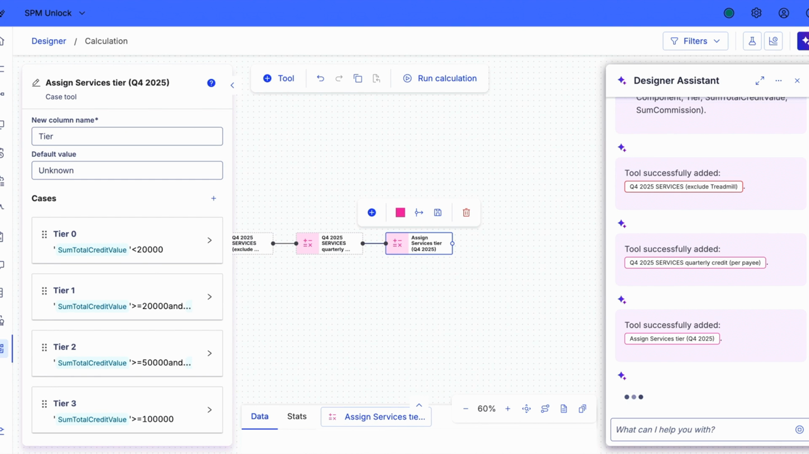
3:30 — Assign Services tier (Q4 2025) · Case tool: New columnTier, Default Unknown. Cases: Tier 0 = SumTotalCreditValue < 20000; Tier 1 = ≥20000...; Tier 2 = ≥50000...; Tier 3 = ≥100000. Canvas shows the chain: quarterly credit → tier → bonus.
Step 6 — Change Type + Select columns
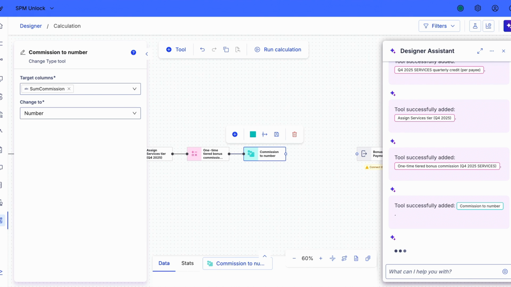
3:50 — Commission to number · Change Type tool: target columnSumCommission → Number. Pipeline visible: tier → one-time bonus → commission → Bonus Payments.
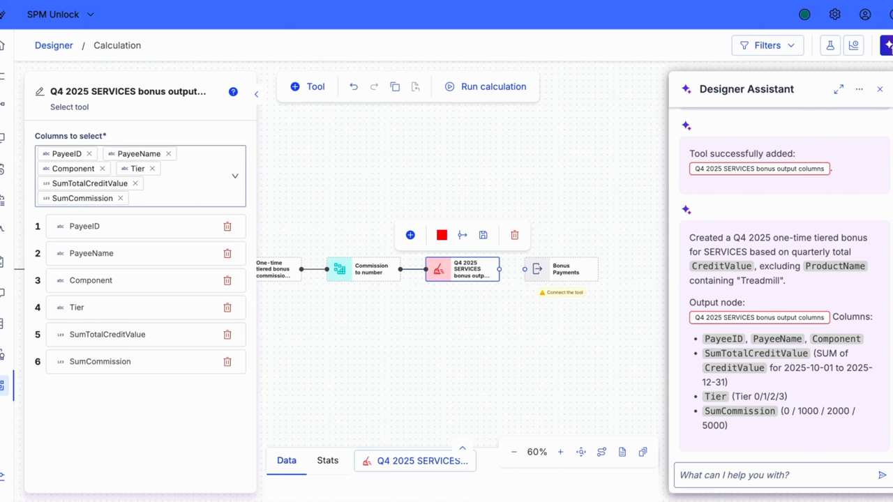
4:10 — Output columns · Select tool: PayeeID, PayeeName, Component, Tier, SumTotalCreditValue, SumCommission. AI summary: "Created a Q4 2025 one-time tiered bonus for SERVICES based on quarterly total CreditValue, excluding ProductName containing Treadmill."Step 7 — Test + preview data
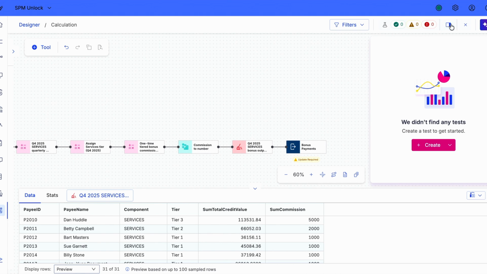
4:30 — Tests panel: "We didn't find any tests — Create a test to get started." Bottom: Data preview table — rows like P2010 Dan Huddie, SERVICES, Tier 3, 113531.84, 5000; P2011 Betty Campbell, Tier 2, 66052.03, 2000. Preview = up to 100 sampled rows before you run.Step 8 — Explain (plain-English payout logic)
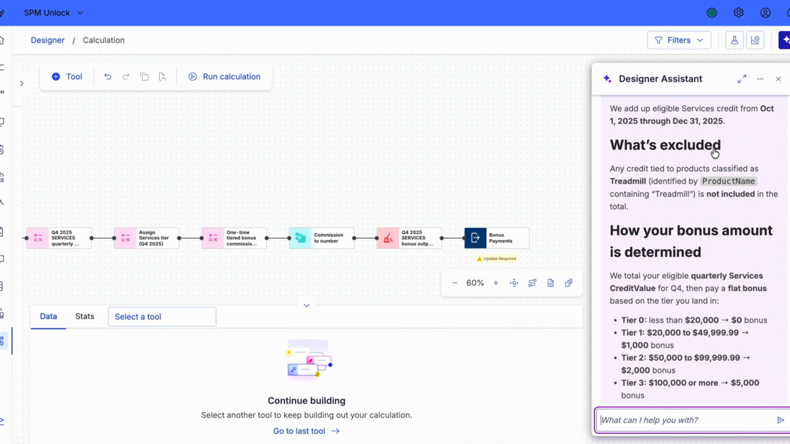
4:50 — Select a tool + right panel explaining the rule: "What's excluded — any credit tied to Treadmill is not included" and "How your bonus amount is determined — Tier 0 ... Tier 3: $100,000+ → $5,000". This is the audit/explain layer for comp disputes.Plan-change flow in one canvas: ask → tool chain appears → tune each tool's form → test with preview → explain to stakeholders → run calculation.
low-codeAI 2. ELT tour — pipes, joins, and the formula/expression tool
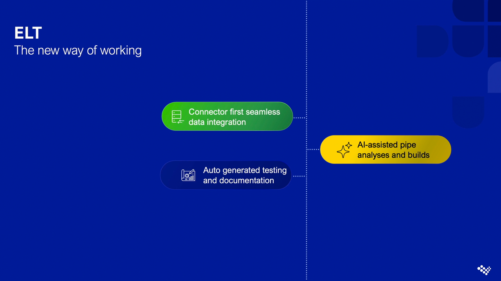
0:30 — ELT opening: "Connector first seamless data integration · AI-assisted pipe analyses and builds · Auto generated testing and documentation".Step 1 — Import / connectors
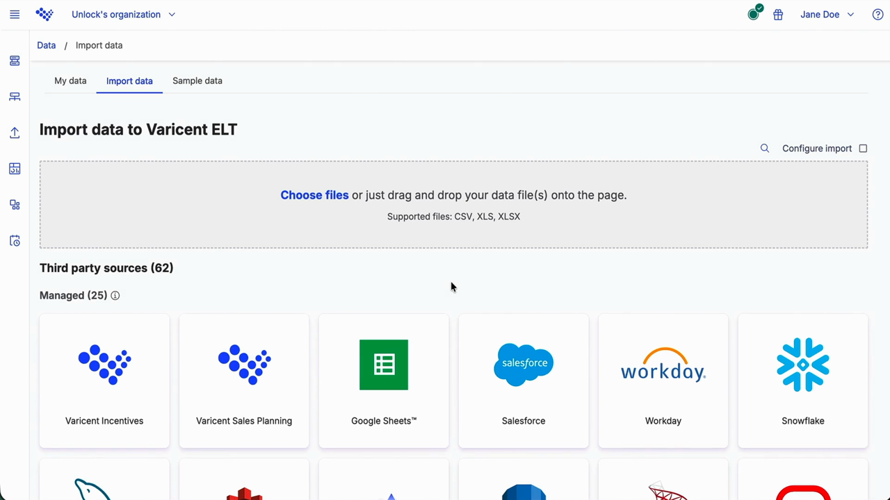
1:00 — Data → Import data: drag-drop CSV/XLS/XLSX, plus 62 third-party sources (25 managed): Varicent Incentives, Varicent Sales Planning, Google Sheets, Salesforce, Workday, Snowflake...Step 2 — Pipe canvas
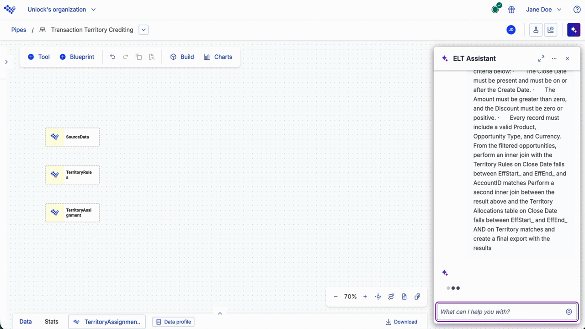
1:30 — Pipes → Transaction Territory Crediting: node canvas with SourceData / TerritoryRules / TerritoryAssignment. Toolbar: Tool, Blueprint, Undo/Redo, Copy, Build, Charts. ELT Assistant reads the target logic ("filter valid opportunities, inner join on territory rules where CloseDate between EffStart_ and EffEnd_...").Step 3 — Filter tool (config form)
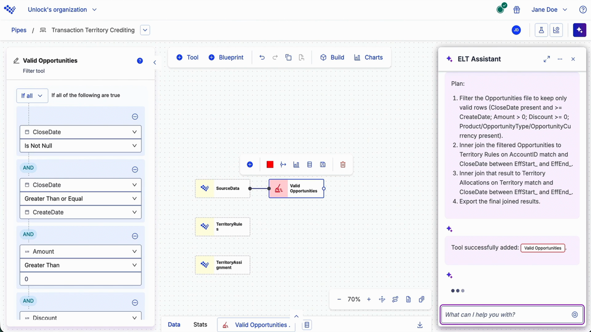
2:00 — Valid Opportunities · Filter tool: conditions built with dropdowns — CloseDate Is Not Null AND CloseDate ≥ CreateDate AND Amount > 0 AND Discount ... Preview tab under it.Step 4 — Join tools
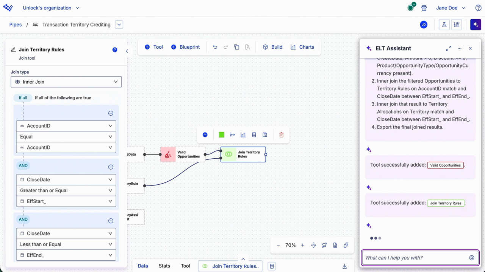
2:20 — Join Territory Rules · Join tool: Inner Join, AccountID = AccountID, CloseDate ≥ EffStart_, CloseDate ≤ EffEnd_.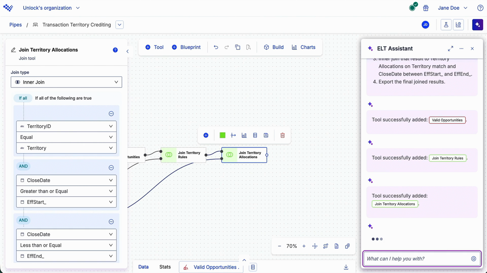
2:40 — Join Territory Allocations · Join tool: TerritoryID = Territory, plus the same date-window conditions.Step 5 — Export + full pipe + data preview
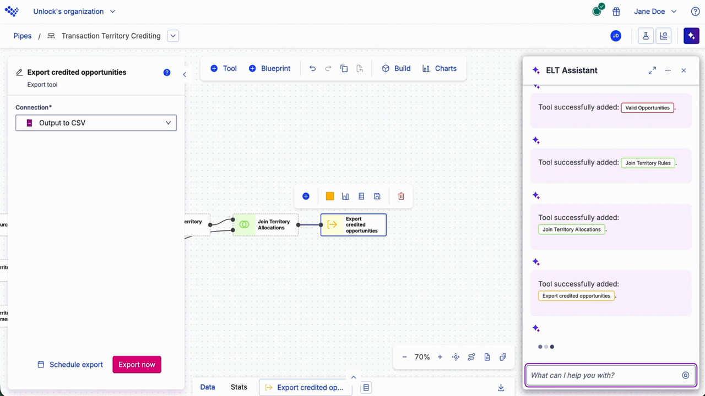
3:00 — Export credited opportunities · Export tool: Connection = Output to CSV, buttons Schedule export / Export now.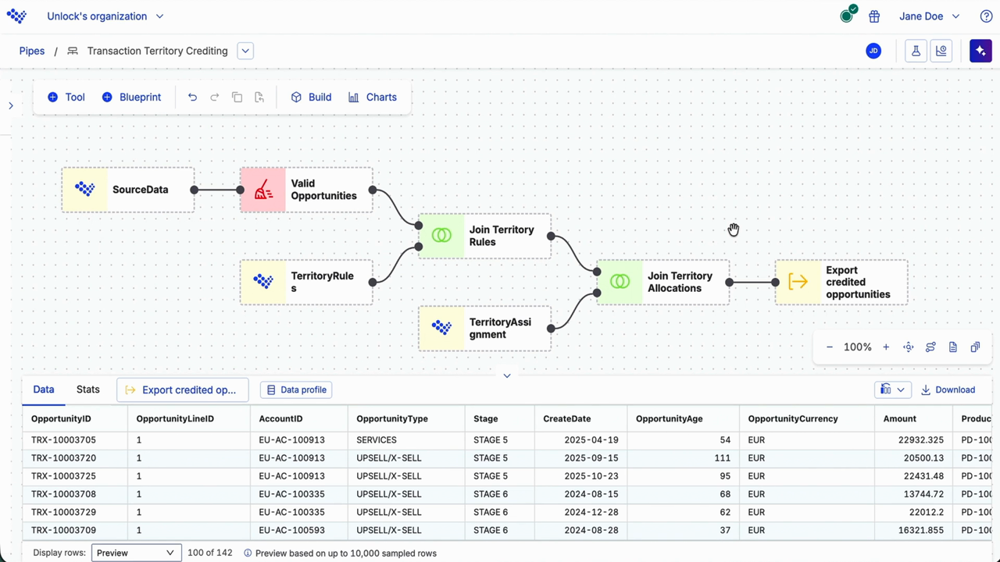
3:20 — Full pipe: SourceData → Valid Opportunities → Join Territory Rules → Join Territory Allocations → Export. Data tab preview (100 of 142): OpportunityID, LineID, AccountID, Type, Stage, CreateDate, Age, Currency, Amount, Product...Step 6 — Auto documentation
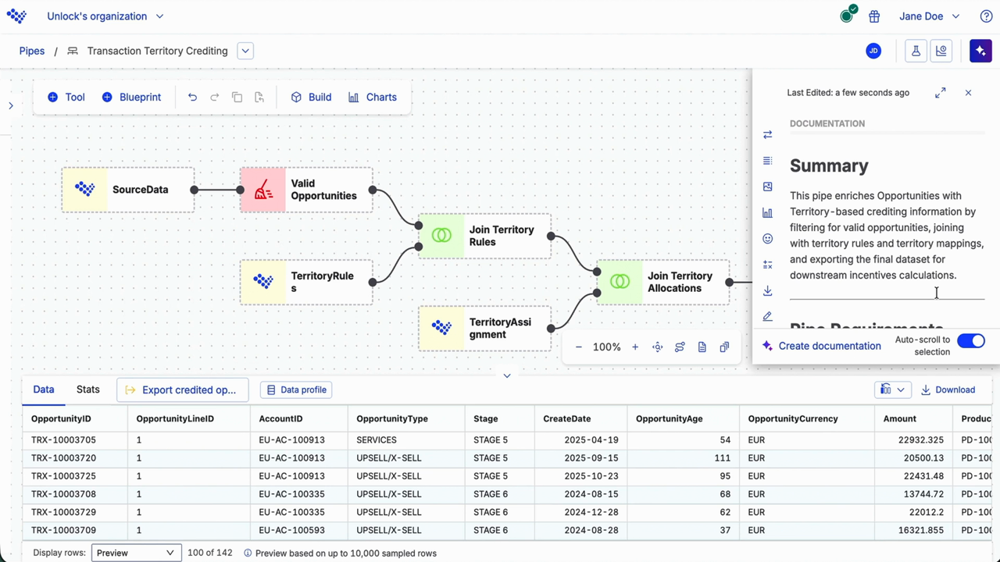
4:10 — Documentation side panel: "This pipe enriches Opportunities with Territory-based crediting information by filtering for valid opportunities, joining with territory rules... exporting the final dataset for downstream incentives calculations." + Pipe Requirements. Auto-generated from the pipe graph.low-code 3. The Formula / Expression tool (docs UI)
The ELT tour video doesn't open the Formula tool itself; these are its public docs pages, showing exactly what the editor looks like:
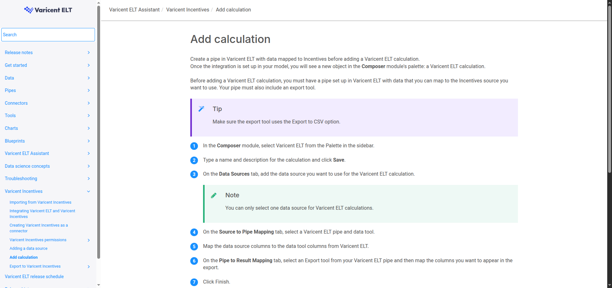
ELT docs — Composer → Palette → Varicent ELT → Add calculation: name + description + Save, then the calculation becomes a node you configure.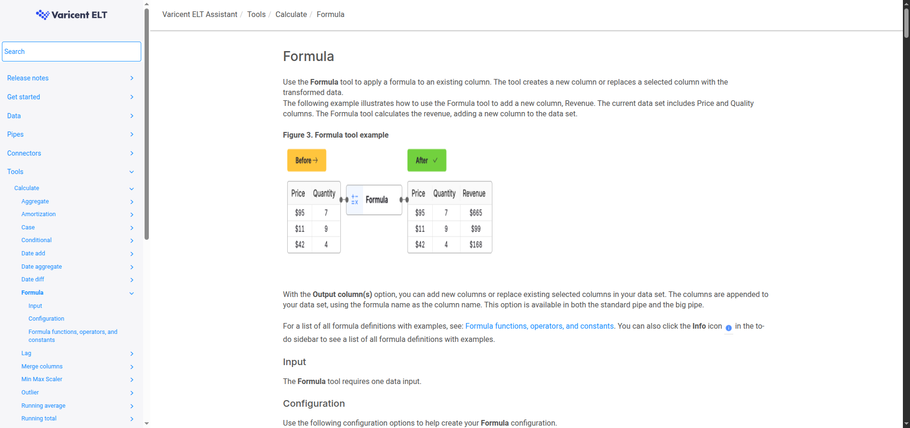
ELT docs — Formula tool: Input (which column set feeds it), Configuration (output column + expression), and the full Functions / Operators / Constants reference list (IF, CASE, Conditional, DateAdd/DateDiff, RunningTotal/RunningAverage, WeightedAverage, Lag, MergeColumns, ...).So the two editors in the product:
• No-code: Incentives Designer canvas — drag/ask, configure tools (Filter, Case, Change Type, Join, Select, Export) via forms, test & explain in place. This is what a comp admin uses daily.
• Low-code: ELT
• No-code: Incentives Designer canvas — drag/ask, configure tools (Filter, Case, Change Type, Join, Select, Export) via forms, test & explain in place. This is what a comp admin uses daily.
• Low-code: ELT
Formula tool — an expression editor over the pipe, with the function library above, for anything the tool forms can't express.4. Bonus: Sales Planning + Seller Insights tours
Sales Planning and Seller Insights tour videos are available from the same CDN directory if you want them later. Highlights:
- Sales Planning (4:53): territory/quota modeling, scenario comparison, AI impact assessment.
- Seller Insights (7:35): seller-facing statements, alerts, dispute/inquiry workflow.